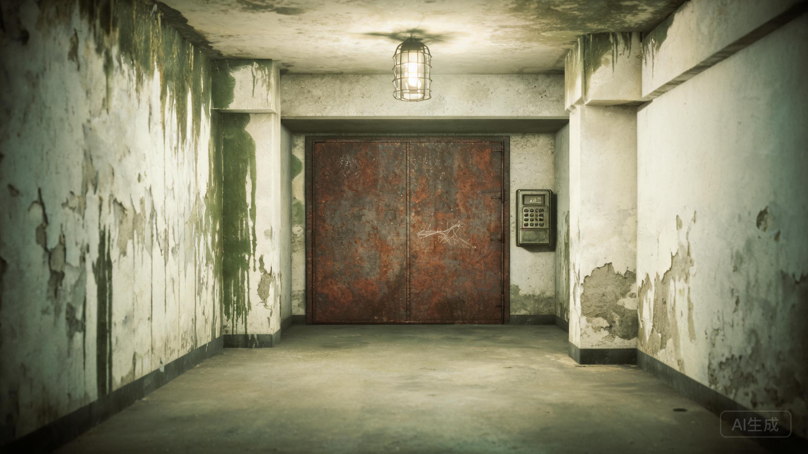

第四制药厂旧址 · 地下三层
主楼已拆除。入口在人民商场地下停车场B3层，消防通道尽头。

ACCESS CONTROL · 4 DIGITS · 键盘上的数字已经磨掉了一半
抓痕一共十九道，集中在下半扇门的右侧，高度正好是一个成年人坐在或躺在地上时，手能够到的地方。
最上面一道很深，指甲嵌进了漆里。旁边还有一排更小的痕迹，像是有人在数日子：五道一组，三组，再加四道。
门是从外面锁上的。抓痕在门内侧。冷库的压缩机和照明都停了，但门缝里一直没有结霜——因为门在1998年10月7日22:00之后，又被打开过一次。
如果门禁没有打开，说明密码还不对。母亲生日的月和日，是四位数字：0817。